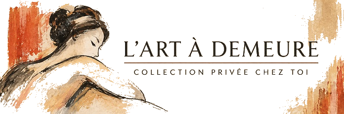
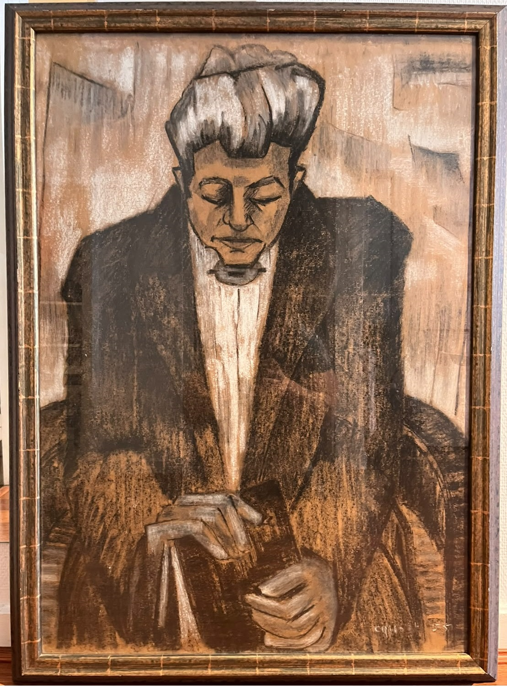

Présentation de l'œuvre
Femme aux yeux fermés est une œuvre réalisée par Roger Crusat en 1955, au pastel sur papier. Elle témoigne d’un moment de son parcours artistique. Sa présentation iconographique sera enrichie à partir de l’observation de l’œuvre originale.
L'artiste
Roger Crusat (1917–1994) est un peintre, lithographe et poète français d’identité catalane. Né à Perpignan, il a développé une grande partie de son parcours artistique à Paris, notamment dans le quartier de Montmartre, où il a fréquenté la cité d’artistes des Fusains. Surnommé « le peintre catalan de Montmartre », il a construit une œuvre personnelle, nourrie par son attachement à la culture catalane et par la vie artistique parisienne.
Données techniques
- Artiste : Roger Crusat (1917–1994)
- Titre : Femme aux yeux fermés
- Date : 1955
- Technique : Pastel sur papier
Formation et parcours artistique
Roger Crusat se forme d’abord auprès d’André Fons-Godail à l’École des beaux-arts de Perpignan. Après sa mobilisation pendant la Seconde Guerre mondiale, il poursuit ses études à Paris auprès de René Jaudon, à l’École nationale supérieure des beaux-arts. Dans sa jeunesse, il participe également à une compagnie de ballet, pour laquelle il réalise des costumes et des décors, tout en pratiquant la danse.
Installé à Montmartre, notamment dans la cité d’artistes des Fusains, il prend part à la vie artistique parisienne. Il devient sociétaire du Salon des Indépendants, du Salon d’Automne et de la Société nationale des beaux-arts. Son parcours comprend des expositions à Paris et en région, ainsi que des présentations à l’étranger, notamment à Genève et Bruxelles, et dans des expositions collectives en Belgique, au Japon et au Mexique.
Expositions et distinctions
Roger Crusat participe à plusieurs manifestations artistiques importantes au cours de sa carrière. Parmi les expositions et présentations documentées figurent notamment :
- Galerie Roger, Lyon, 1946.
- Salon d’hiver, au Musée d’art moderne de la Ville de Paris, en 1946, 1949 et 1950.
- Galerie Durand-Ruel, Paris, 1955.
- Galerie E.-J. Rivière, Paris, 1958.
En 1956, il reçoit le Prix du Salon populiste pour son œuvre Descente de gouttière. En 1957, certaines sources mentionnent également le Grand Prix des Amis de Brantôme, dont la date reste à confirmer.
Son parcours témoigne de sa participation active à la scène artistique française du XXe siècle.
Galerie — Autres œuvres de Roger Crusat


Sources documentaires :
Proantic — annonce commerciale pour
Grand Bouquet de fleurs.
1stDibs — Poupée 1925
Artprice — Femme assise